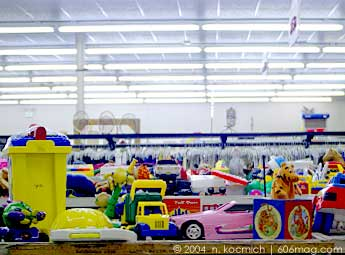

The Crayola color “Flesh” was changed to peach in 1962 to avoid discriminating against people with different skin colors. |
The Danish company Lego , which began in 1932, first manufactured ironing boards, and stepladders. |
Ever wonder why the company is named Nintendo? If you write the company's name out in Kanji (a Japanese writing style that uses various picture-esque characters to represent words or objects), you would get three kanji: "nin", "ten", and "do". "Nin" means "to rise" or "ascend". "Ten" is the kanji for sky, but it can also represent heaven. And "do" is the kanji for temple. So if you transliterate the word "Nintendo"... You'd get "Ascend to heavenly temple". |
According to the Guinness Book Of Records, Super Mario Bros. is the best-selling video game of all time, with a total of 40.23 million units sold worldwide, as of 1999. The whole Mario Bros. series has 26 games and sold over 152 million copies since 1983, according to Guinness. |
Marvin Glass originally designed Mouse Trap as a Rube Goldberg-ish toy contraption. Ideal didn't like it as a toy, but loved it as a game! It became their best-selling game for many years, and is still being made today. |
Parker Brothers was founded by George Swinerton Parker, 18, in 1885. The first game produced was 'Banking,' in which the player who amasses the most wealth is the winner. |
The Ouija board is named for the French and German words for yes - oui and ja. |
There are 1,929,770,126,028,800 different color combinations possible on a Rubik's Cube . |
Originally, in the game of Clue the mansion included a "gun" room, but it was removed because it was thought to be too elitist (unlike the Ballroom, of course) . |
In Chutes and Ladders, the most common games are between 18 and 22 moves long. It's also worth noting that the shortest possible game of Chutes and Ladders is 5 moves. |
The idea for this toy came from Yale University students who enjoyed tossing empty Frisbee Pie Company pans across campus after they had eaten the goodies; the flying disk was marketed 1957. |
Steve Wozniak, the man who designed and built the first video game of Breakout , was paid 350 dollars for his efforts. |


In order for a deck of cards to be mixed up enough to play with properly, it should be shuffled seven times. |
More money is printed daily for the game Monopoly than money printed by the U.S. Treasury . |
The highest scoring word in the English language for the game of Scrabble is “quartzy”. This will score 164 points if played across a red triple word square with the “Q” on a blue double letter square. |
Barbie's full name is Barbra Millicent Roberts . |
In 1996, toy company Mattel released a " Harley Davidson" Barbie . This doll's distinctive feature is a birth mark on her face that changes position with every new release of the doll. |
| It requires 63 feet of wire to make a Slinky toy. |